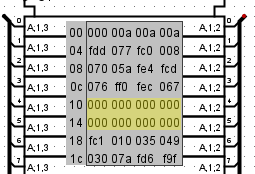

Формат v3.0 hex words plain
Этот формат во многом аналогичен v2.0 raw, но данные в нём строго структурированы по отдельным словам.
Пример структуры файла
v3.0 hex words plain 000 00a 00a 00a fdd 077 fc0 008 070 05a fe4 fcd 076 ff0 fec 067 002 f85 f8b ffe 021 016 f9e fc6Память на 24 слова по 12 бит
Правила и синтаксис
- Заголовок: Первая строка обязана содержать идентификатор формата (v3.0 hex words plain).
- Разделители: Данные (слова) записываются в шестнадцатеричном виде и обязательно разделяются пробелами. Наличие пробела критически важно для правильного распознавания границ слов. Несколько пробелов подряд обрабатываются корректно (схлопываются в один разделитель).
- Форматирование: Символы перевода строки не интерпретируются как разделители. За исключением пробелов и первой обязательной строки, строгих правил разметки нет. Префикс 0x перед числами не требуется (если он присутствует, парсер его просто проигнорирует).
- Комментарии: Поддерживаются однострочные комментарии. Все символы в строке, идущие после символа решётки (#), полностью игнорируются.
Обработка несоответствий
- Избыток разрядности: Если разрядность слов в файле превышает физическую разрядность ячеек памяти в компоненте, «лишние» старшие биты будут отброшены (проигнорированы).
- Недостаток данных: Если объём данных в файле меньше объёма памяти компонента, оставшиеся ячейки инициализируются нулями (для ПЗУ) или нулями/случайными значениями (для ОЗУ) в соответствии с настройками на вкладке | Опции проекта |.
Формат v3.0 hex words addressed
Этот формат полностью идентичен предыдущему по характеристикам, но добавляет возможность явной адресации. Единственное отличие — указание адреса в начале каждой строки. Адрес записывается в шестнадцатеричном формате, после чего ставится двоеточие (:).
Пример структуры файла
v3.0 hex words addressed 00: 000 00a 00a 00a fdd 077 fc0 008 08: 070 05a fe4 fcd 076 ff0 fec 067 18: fc1 010 035 049 030 07a fd6 f9fПамять на 32 слова по 12 бит
В данном примере пропущен блок из 8 слов по адресу 0x10. Как и всегда, эти незаданные ячейки будут инициализированы нулями или случайными значениями согласно настройкам на вкладке | Опции проекта |.

Далее: Контекстное меню и файлы.